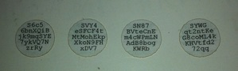
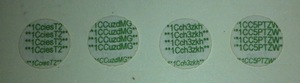
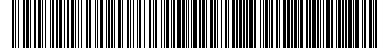

The mini private key format is a method of encoding a Bitcoin private key in as few as 30 characters so that it can be embedded in a small space. This private key format was first used in Casascius physical bitcoins, and is also favorable for use in QR codes. The fewer characters encoded in a QR code, the lower dot density can be used, as well as more dots allocated to error correction in the same space, significantly improving readability and resistance to damage. The mini private key format offers its own built-in check code as a small margin of protection against typos.
{kind=link}
An example key using this encoding is S6c56bnXQiBjk9mqSYE7ykVQ7NzrRy.
Usage on a physical bitcoin
The way it might appear within a physical bitcoin is on a round card printed as follows:
Side of discs showing mini private key: (from ?Casascius physical bitcoins)

{kind=link}
Side of discs showing prefix of bitcoin address (printed on the opposite side):

{kind=link}
The examples in this article use the private key and Bitcoin address of the leftmost circle in the above two photos.
Usage in bar codes
The mini private key is suitable for use in QR codes. The recommended settings for maximizing readability are: QR version 3, error correction level Q (near highest, 25% possible lost codeword recovery). This results in a 29x29 grid. A minikey QR code can also fit in a 25x25 grid with QR version 2, error correction level L (lowest, 7% possible lost codeword recovery).
The sample private minikey encoded as a QR code on a 29x29 grid looks like this:
The mini private key is small enough to fit in a one-dimensional barcode while still remaining practical. Among the most popular one-dimensional barcode symbologies, the one known as "Code 128" is best suited for encoding a minikey due to its favorable data density and support for mixed case strings. The variant known as "Code 128-B" produces the shortest code for strings containing lowercase characters.
The sample private minikey encoded with Code 128-B looks like this:

Import
Mini private keys can be imported through the following clients/services:
Applications
The current mainline ("Satoshi") client cannot currently be used to import minikeys.
Web
- ?BlockChain.info
- Private keys can be imported into a Blockchain.info wallet and bitcoins can be sent to another address immediately upon import without needing to wait for any confirmations. Even after import, funds remain associated with the private key until they are actually spent to a different address.
- ?StrongCoin
Decoding
The private key encoding consists of 30 alphanumeric characters from the ?base58 alphabet used in Bitcoin. The first of the characters is always the uppercase letter S.
To determine whether the minikey is valid:
- Add a question mark to the end of the mini private key string.
- Take the SHA256 hash of the entire string. However, we will only look at the first byte of the result.
- If the first byte is 00, the string is a well-formed minikey. If the first byte is not 00, the string should be rejected as a minikey.
Example with SHA256
Here is an example with the sample private key S6c56bnXQiBjk9mqSYE7ykVQ7NzrRy.
The string "S6c56bnXQiBjk9mqSYE7ykVQ7NzrRy?" has a SHA256 value that begins with 00, so it is well-formed.
To obtain the full 256-bit private key, simply take the SHA256 hash of the entire string. There is no encoding for line breaks in the string, even if the key is broken into multiple lines for printing. The SHA256 should be taken of exactly thirty bytes.
SHA256("S6c56bnXQiBjk9mqSYE7ykVQ7NzrRy") = 4C7A9640C72DC2099F23715D0C8A0D8A35F8906E3CAB61DD3F78B67BF887C9AB
This sample key in wallet export format is 5JPy8Zg7z4P7RSLsiqcqyeAF1935zjNUdMxcDeVrtU1oarrgnB7, and the corresponding Bitcoin address is 1CciesT23BNionJeXrbxmjc7ywfiyM4oLW.
Command line verification
To calculate SHA256 from the command line on OSX or Linux devices:
echo -n "S6c56bnXQiBjk9mqSYE7ykVQ7NzrRy?" shasum -a 256
That should output a line of text like "000f2453798ad4f951eecced2242eaef3e1cbc8a7c813c203ac7ffe57060355d -". Since the first two characters are 00 the verification passes for the mini key S6c56bnXQiBjk9mqSYE7ykVQ7NzrRy
Check code
The mini private key format offers a simple typo check code. Mini private keys must be generated in a "brute force" fashion, keeping only keys that conform to the format's rules. If a key is well-formed (30 Base58 characters starting with S), but fails the hash check, then it probably contains a typo.
If the SHA256 hash of the string followed by '?' doesn't result in something that begins with 0x00, the string is not a valid mini private key.
Creating mini private keys
Creating mini private keys is relatively simple. One program which can create such keys is ?Casascius Bitcoin Utility.
Mini private keys must be created "from scratch", as the conversion from mini private key to full-size private key is one-way. In other words, there is no way to convert an existing full-size private key into a mini private key.
To create mini private keys, simply create random strings that satisfy the well-formedness requirement, and then eliminate the ones that do not pass the typo check. (This means eliminating more than 99% of the candidates.) Then use the appropriate algorithm to compute the corresponding private key, and in turn, the matching Bitcoin address. The Bitcoin address can always be computed from just the private key.
It is strongly advisable to avoid using the digit "1" in minikeys unless it is being printed in such a way where a user is unlikely to mistake it for the lowercase letter "l". Few clients and redemption tools are prepared to tell the user that their entry containing the letter "l" should actually be the number "1" - rather, they will simply reject the code and may leave the user confused.
In all cases, you must use a secure cryptographic random number generator to eliminate risks of predictability of the random strings.
Casascius Series 1 coins
Casascius Series 1 Physical Bitcoins use a 22-character variant of the minikey format, instead of 30 characters. Everything is the same other than the length. To properly implement minikey redemption, services and clients MUST support the 30-character format, but MAY support the 22-character format as well. Use of the 22-character format for future applications is discouraged due to security considerations.
Python Code
The following code produces sample 30-character SHA256-based mini private keys in Python. For real-world use, random must be replaced with a better source of entropy, as the Python documentation for random states the function "is completely unsuitable for cryptographic purposes".
BASE58 = '23456789ABCDEFGHJKLMNPQRSTUVWXYZabcdefghijkmnopqrstuvwxyz'
def Candidate(): """ Generate a random, well-formed mini private key. """ return('%s%s' % ('S', *.join( (1))) for i in range(29))))
def GenerateKeys(numKeys = 10): """ Generate mini private keys and output the mini key as well as the full private key. numKeys is The number of keys to generate, and """ keysGenerated = 0 totalCandidates = 0 while keysGenerated < numKeys: try: cand = Candidate() # Do typo check t = '%s?' % cand # Take one round of SHA256 candHash = hashlib.sha256(t).digest() # Check if the first eight bits of the hash are 0 if candHash?0 == '\x00': privateKey = GetPrivateKey(cand) print('\n%s\nSHA256( ): %s\nsha256(?): %s' % (cand, privateKey, candHash.encode('hex_codec'))) if CheckShortKey(cand): print('Validated.') else: print('Invalid!') keysGenerated += 1 totalCandidates += 1 except KeyboardInterrupt: break print('\n%s: %i\n%s: %i\n%s: %.1f' % ('Keys Generated', keysGenerated, 'Total Candidates', totalCandidates, 'Reject Percentage', 100*(1.0-keysGenerated/float(totalCandidates))))
def GetPrivateKey(shortKey): """ Returns the hexadecimal representation of the private key corresponding to the given short key. """ if CheckShortKey(shortKey): return hashlib.sha256(shortKey).hexdigest() else: print('Typo detected in private key!') return None
def CheckShortKey(shortKey): """ Checks for typos in the short key. """ if len(shortKey) != 30: return False t = '%s?' % shortKey tHash = hashlib.sha256(t).digest() # Check to see that first byte is \x00 if tHash?0 == '\x00': return True return False